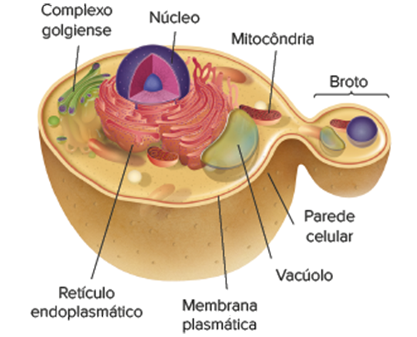
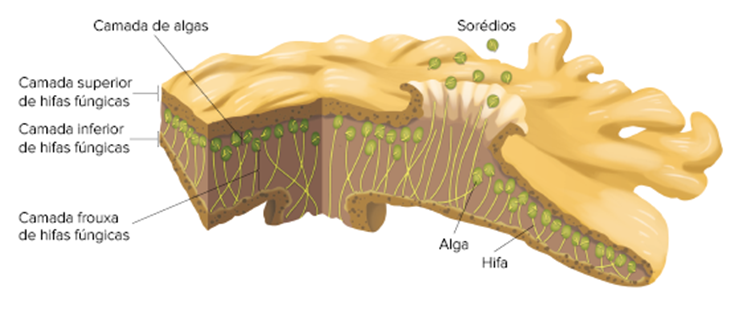

Cogumelos da espécie Amanita muscaria. Diâmetro do chapéu varia de 4 a 25 cm.
Na culinária, fungos são considerados iguarias, pois possuem aromas e sabores peculiares que incrementam diversos pratos. As trufas pretas, por exemplo, estão na lista de alimentos mais caros do mundo, pois são muito raras na natureza e não podem ser
cultivadas pelo ser humano. Cogumelos, como o champignon e o shiitake, são cada vez mais utilizados no cotidiano por apresentarem elevado valor nutricional. Outros fungos, como os do gênero Penicillium, podem ser empregados
para a produção de diferentes tipos de queijos, como o roquefort. Entretanto, a maioria dos fungos não pode ser incluída na nossa alimentação. Algumas espécies, como o cogumelo Amanita muscaria (apresentado na imagem de abertura),
são venenosas e alucinógenas, podendo causar problemas para a saúde humana. O conhecimento sobre os fungos é fundamental para que a humanidade possa usufruir dos benefícios desses organismos para a produção de alimentos e medicamentos
e para a manutenção do equilíbrio dos ecossistemas – principal tema desenvolvido neste capítulo.
Por que os fungos não morrem quando os cogumelos são retirados deles?
Que medicamento humano pode ser produzido pelos fungos do gênero Penicillium?
Por que os fungos são importantes para a manutenção dos ecossistemas?
Neste capítulo serão abordadas as habilidades
EM13CNT202
O que são fungos?
Fungos são componentes de muita importância na biosfera. A sua diversidade é vasta, possibilitando a colonização de diversos ambientes no planeta. A capacidade de reprodução dos fungos é uma das características fundamentais para
esse sucesso, pois um único organismo é capaz de produzir bilhões de esporos que são transportados para todos os tipos de ambientes. Esses organismos já foram classificados no reino Vegetal, junto com as plantas, pelo
fato de serem sésseis, bem como no reino Protista, junto com as algas e os protozoários, por não se enquadrarem no reino Animal nem no Vegetal. Com o aumento do conhecimento a seu respeito, ficou claro que eles formam um grupo
bem-definido, denominado reino Fungi. Os fungos possuem características compartilhadas com animais, como a nutrição heterotrófica, e com vegetais, como a presença de parede celular; contudo, também possuem características
exclusivas e que tornam esse reino um grupo monofilético de seres vivos. Como exemplos conhecidos de organismos desse grupo, podemos citar as leveduras, os bolores, as orelhas-de-pau e os cogumelos
Características gerais
Célula
Todos os fungos possuem células eucarióticas, ou seja, o DNA é separado do citosol pela carioteca e fica confinado dentro do núcleo celular. Outra característica de uma célula eucariótica é a presença de organelas membranosas que
desempenham funções específicas no metabolismo celular. As organelas encontradas nas células dos fungos são ribossomos, mitocôndrias, retículo endoplasmático (liso e granuloso), peroxissomos, vacúolos e complexo golgiense.
Uma característica que difere as células dos fungos e das plantas é a ausência de cloroplastos nas células fúngicas. Diferentemente das paredes celulares das plantas, que possuem celulose, e das bactérias, que possuem
peptideoglicanos, as paredes das células dos fungos são formadas predominantemente por quitina. Esse polissacarídeo nitrogenado é forte, flexível e também encontrado no esqueleto externo (exoesqueleto) dos animais artrópodes.

Representação esquemática da célula eucariótica de uma levedura, representante do reino Fungi.
Uma outra característica compartilhada entre fungos e animais é o glicogênio, polissacarídeo de reserva energética presente nesses dois grupos de seres vivos. O glicogênio é um polímero de glicose estocado no citoplasma das células
fúngicas. Além de glicogênio, são encontradas gotas lipídicas nas células fúngicas, que também servem como fonte de energia para os fungos.
Estrutura do corpo
Os fungos podem ser unicelulares ou pluricelulares. No caso dos pluricelulares, o corpo é formado por filamentos tubulares individuais de crescimento rápido denominados hifas (do grego hyphe, que significa “teia”). O conjunto de
hifas entrelaçadas dos fungos forma o micélio, corpo que penetra no material do qual o fungo se alimenta. A estrutura do micélio maximiza a relação área superficial/volume, tornando a alimentação mais eficiente. Por outro lado,
essa característica também facilita a perda de água, tornando os fungos dependentes da umidade. Os fungos possuem uma grande capacidade de crescimento à medida que absorvem água do ambiente. De acordo com a presença ou
ausência de septos (paredes internas), separando as células do filamento, as hifas dos fungos podem ser divididas em dois grupos: cenocíticas ou septadas. As hifas cenocíticas (do grego ceno e cytos, que significam, respectivamente,
“comum” e “célula”) não apresentam septos separando as células, sendo formadas por uma massa citoplasmática contínua que contém centenas ou milhares de núcleos. Essas hifas se formam a partir de divisões repetitivas dos núcleos
sem a ocorrência de citocinese. As hifas septadas possuem paredes internas denominadas septos, que delimitam células com um ou dois núcleos. Os septos não as isolam completamente, pois possuem poros por meio dos quais
ocorre a passagem de moléculas, organelas e até mesmo núcleos, permitindo que ocorra a comunicação entre elas.
Representação esquemática de hifas cenocíticas e septadas.
Nas hifas monocarióticas, os septos delimitam células com apenas um núcleo, enquanto nas hifas dicarióticas os septos delimitam células com dois núcleos, cada um proveniente de um organismo diferente. Determinadas hifas modificadas,
denominadas rizoides, são encontradas em diversos fungos, como os bolores, e servem para fixação dos fungos no substrato em que vivem. Alguns fungos de plantas possuem hifas com projeções ramificadas, que invadem a célula vegetal,
chamadas haustórios. Essas projeções não rompem a membrana plasmática da célula vegetal e servem para a absorção de nutrientes da planta para o fungo.
REECE, J. B. et al. Biologia de Campbell. 10. ed. Porto Alegre: Artmed, 2015. Representação esquemática de haustórios fúngicos penetrando nas células vegetais.
Nos processos de reprodução sexuada de muitos fungos, ocorre a formação de estruturas denominadas corpos de frutificação, dentre as quais os cogumelos e as orelhas-de-pau são os exemplos mais conhecidos. Essas estruturas são formadas
por um conjunto de hifas dicarióticas compactas, responsáveis pela produção de esporos, células reprodutivas dos fungos. A retirada do corpo de frutificação (cogumelo) não afeta o desenvolvimento do fungo, uma vez que o micélio,
responsável pelo crescimento e nutrição, permanece preservado.
Nutrição
Com relação à nutrição, todos os fungos são heterótrofos por absorção e utilizam uma grande variedade de compostos orgânicos como alimento. Diferentemente do que ocorre com os animais, esses organismos não ingerem (comem) seus
alimentos. Em vez disso, absorvem os nutrientes que se encontram no ambiente em que vivem. Diversas espécies de fungo possuem digestão extracorpórea, pois durante o crescimento sobre a fonte de alimento, suas hifas liberam
poderosas enzimas digestivas que atuam fora do corpo. Após a digestão, as hifas absorvem os produtos, utilizando-os como fonte de energia e matéria-prima para o crescimento e sobrevivência. Muitos fungos são decompositores,
ou sapróbios, pois se alimentam de matéria orgânica dos restos de alimentos, das fezes dos animais e, juntamente com as bactérias e outros seres vivos necrófagos, atuam na decomposição de cadáveres. Outras espécies são simbiontes,
ou seja, vivem em parceria com outros organismos. Os simbiontes podem estabelecer três tipos diferentes de relações ecológicas com as outras espécies: mutualismo, parasitismo e comensalismo. No mutualismo, as duas espécies
envolvidas na relação são beneficiadas, como ocorre com as micorrizas e com os liquens. Quando o fungo é beneficiado e a espécie hospedeira é prejudicada, temos a relação de parasitismo. No caso do comensalismo, apenas o fungo
é beneficiado, enquanto a relação para a outra espécie simbionte é neutra, ou seja, não ocorre benefício nem prejuízo.
Reprodução
Em praticamente todos os fungos, a reprodução se dá por meio de células especiais, denominadas esporos, que podem ser carregadas pelo vento, por animais ou pela água. Quando um esporo encontra condições ideais – com matéria orgânica,
umidade e calor – ocorre a germinação. Nesse processo, sua casca resistente se rompe, e ocorre o alongamento da célula; enquanto isso acontece, divisões nucleares se sucedem, formando as hifas que se ramificam e crescem originando
o micélio (corpo do fungo).
Reprodução assexuada
Cerca de 20 mil espécies de fungos são conhecidas por se reproduzirem apenas de forma assexuada. Uma forma de reprodução assexuada muito comum nos fungos é a fragmentação do micélio, que produz novos organismos. Fungos unicelulares,
como as leveduras, podem se reproduzir por brotamento, processo em que ocorre uma divisão celular mitótica assimétrica na qual é formada uma pequena célula-filha (broto) que fica, em muitos casos, presa à célula-mãe. Diversas
espécies se reproduzem por esporulação, processo em que ocorre a produção de milhares de esporos dotados de paredes resistentes. Nesse caso, são produzidos por mitose, sendo todos geneticamente iguais entre si. Nos bolores,
tais esporos são produzidos em estruturas denominadas esporângios, que ficam nas extremidades de hifas especiais denominadas esporangióforo
Representação esquemática do bolor do pão do gênero Rhizopus se reproduzindo assexuadamente por esporulação.
Reprodução sexuada
Para exemplificar a reprodução sexuada dos fungos, vamos utilizar como modelo didático o ciclo reprodutivo de um cogumelo, fungo que pertence ao grupo dos basidiomicetos. O ciclo se inicia com a germinação dos esporos haploides
(n), denominados basidiósporos, em ambientes favoráveis que possuem umidade, temperatura adequada e matéria orgânica. Ao germinarem, os esporos formam hifas monocarióticas haploides (n), que se espalham e se entrelaçam no ambiente
e formam o micélio, estrutura responsável pelo crescimento e nutrição do fungo. A reprodução sexuada se inicia quando hifas monocarióticas dos fungos de diferentes tipos sexuais, um do tipo + e outro do tipo –, liberam feromônios
que estimulam o crescimento das hifas de um em direção às do outro. Quando se tocam, ocorre a união do citoplasma das células, processo conhecido como plasmogamia. As hifas formadas a partir dessa fusão são denominadas hifas
dicarióticas (n + n), pois possuem dois núcleos geneticamente diferentes que coexistem em cada uma das células. O crescimento dessas hifas forma o micélio dicariótico, que possui vida longa no ambiente em que vive. Certas
condições do ambiente, como chuva ou mudança de temperatura, estimulam o crescimento do micélio dicariótico (n + n) para formar massas compactas de hifas que produzem o corpo de frutificação (cogumelo), também conhecido como
basidiocarpo ou basidioma. Essa estrutura pode ser formada em apenas algumas horas enquanto o fungo absorve água do ambiente, o que permite a passagem do citoplasma entre as células. Um cogumelo geralmente é formado pela volva
(estrutura em forma de copo que fica na base do corpo de frutificação de algumas espécies de cogumelos), estipe (haste), anel e píleo (chapéu), no qual são encontradas as lamelas
Representação esquemática do basidiocarpo (cogumelo) de um basidiomiceto.
Nas lamelas do cogumelo são encontrados os basídios, estruturas formadas nas extremidades das hifas dicarióticas e que são típicas dos basidiomicetos, grupo de fungos ao qual os cogumelos pertencem. Os basídios são células grandes
nas quais ocorre o processo de cariogamia (fusão dos núcleos), com formação de uma célula diploide (2n) denominada zigoto. Este se divide por meiose e forma quatro esporos haploides (n) denominados basidiósporos. Um cogumelo
é capaz de produzir bilhões de esporos que serão transportados para outros ambientes pelo vento ou, em alguns casos, por animais, podendo formar novos fungos. Após a produção dos esporos, os cogumelos são destruídos, mas os
micélios dos fungos permanecem vivos e em crescimento na busca de novas fontes de alimento.
Em muitas espécies de fungos, existem formas sexuais geneticamente distintas de micélios, representadas pelos sinais + e –. Isso significa que organismos + só podem acasalar com organismos –, e vice-versa, evitando que ocorra acasalamento entre os que
possuem a mesma forma sexual.
REECE, J. B. et al. Biologia de Campbell. 10. ed. Porto Alegre: Artmed, 2015. Representação esquemática do ciclo de vida de um cogumelo, fungo do grupo dos basidiomicetos.
Importância ecológica
Muitos fungos, assim como as bactérias, são decompositores de matéria orgânica do ambiente, contribuindo para a reciclagem de matéria nos ecossistemas. Os fungos são os principais decompositores de celulose e lignina, componentes
das paredes celulares dos vegetais.
Micorrizas
Certas espécies de fungos, como os glomeromicetos, realizam uma associação simbiótica com as raízes das plantas, denominada micorriza (do grego mykes e rhyza, que significam, respectivamente, “fungo” e “raiz”). Essa relação ocorre
em mais de 90% de todas as espécies de plantas, porém elas conseguem formar micorrizas apenas quando expostas a uma espécie adequada de fungo presente no solo em que vivem. As micorrizas podem ser divididas em dois tipos
de acordo com a capacidade de penetrar nas células da planta: ectomicorrizas e endomicorrizas. Nas ectomicorrizas, as hifas fúngicas enrolam-se nas raízes sem penetrar nas células e se espalham pelo solo na área ao redor delas.
Nas endomicorrizas, as hifas do fungo penetram na parede celular das células vegetais e formam estruturas denominadas arbúsculos (pequenas árvores), pelas quais ocorrem as trocas de nutrientes entre os organismos. A relação
ecológica que ocorre entre esses dois organismos é o mutualismo: as plantas são beneficiadas, pois as hifas fúngicas presas nas raízes aumentam a área superficial para a absorção de água (funcionando como uma esponja) e minerais;
além de produzirem moléculas que estimulam o crescimento e a ramificação das raízes, em troca, os fungos recebem moléculas orgânicas, como aminoácidos e açúcares produzidos pela planta.
Questão resolvida
1
Unesp Pesquisadores da Universidade de Harvard investigaram o efeito invasivo da planta Alliaria petiolata sobre o crescimento de mudas de árvores nativas que apresentam raízes em associação com fungos micorrizas. Eles
sabiam que a Alliaria petiolata não se associa às micorrizas. Em um experimento, eles cultivaram mudas de três espécies de árvores: Acer saccharum, Acerrubrum e Fraxinus americana em quatro tipos de solos diferentes, garantindo
que as demais condições ambientais fossem as mesmas. Duas das amostras de solo foram coletadas de um local invadido por Alliaria petiolata, sendo que uma dessas amostras foi esterilizada. As outras duas amostras de solo
foram recolhidas de um local não invadido por Alliaria petiolata, sendo uma delas esterilizada. Depois de quatro meses de crescimento, os pesquisadores colheram brotos e raízes de todas as plantas e determinaram o aumento
de biomassa seca. As raízes também foram analisadas em relação à porcentagem de colonização por micorrizas.
Que efeito a Alliaria petiolata causa sobre a colonização das raízes por micorrizas e qual a vantagem deste efeito para a Alliaria petiolata?
Como a associação entre os fungos e as raízes das mudas influencia o aumento da biomassa seca? Qual vantagem as micorrizas obtêm com essa associação?
Resolução:
A planta Alliaria petiolata inibe e diminui a colonização das raízes das espécies Acer saccharum, Acer rubrum e Faxinus americana por micorrizas, tendo como vantagem a diminuição na competição por espaço e por luz com essas
plantas.
Os fungos aumentam a absorção de minerais pelas raízes das plantas, influenciando no aumento da biomassa seca, e recebem em troca matéria orgânica produzida por esses vegetais na fotossíntese.
Liquens
Os fungos podem apresentar uma relação simbiótica com organismos autótrofos, na qual milhões de células fotossintetizantes ficam envolvidas por um emaranhado de hifas fúngicas. Essa associação forma uma estrutura denominada líquen,
que consegue sobreviver em diversos locais do planeta, como superfícies de rochas, troncos das árvores, barrancos e no solo.
Exemplos da diversidade morfológica e de cores dos liquens. A. Líquen crostoso de cor laranja da espécie Caloplaca namibensis em superfície rochosa. Tamanho médio (diâmetro): 25 cm. B. Líquen folhoso amarelo da espécie Xanthoria
parietina. Tamanho médio (comprimento): 30 cm. C. Líquen fruticoso cinza, conhecido popularmente como líquen das renas, da espécie Cladonia rangiferina. Tamanho médio (altura): 25 cm.
O componente fúngico do líquen é, na maioria das vezes, um ascomiceto, embora liquens de basidiomicetos e glomeromicetos sejam conhecidos. O fungo fornece um ambiente favorável para o crescimento e metabolismo do simbionte fotossintetizante
da relação. A organização física das hifas, que correspondem à maior parte do líquen, permite a absorção de água e minerais, que são essenciais ao crescimento do líquen, e protege o organismo fotossintetizante. Muitos
fungos produzem pigmentos que protegem os organismos fotossintetizantes dos efeitos danosos da radiação ultravioleta, além de substâncias tóxicas que impedem que os liquens sejam comidos por animais. Fungos também secretam
ácidos liquênicos, que são capazes de corroer superfícies rochosas para o aproveitamento dos minerais.

REECE, J. B. et al. Biologia de Campbell. 10. ed. Porto Alegre: Artmed, 2015. Representação esquemática da estrutura de um líquen folhoso, indicando as hifas fúngicas e as células das algas.
Os componentes autótrofos da relação são algas verdes (unicelulares ou filamentosas) ou cianobactérias. Os autótrofos ocupam uma camada interna, abaixo da superfície do líquen, fornecendo ao fungo parte da matéria orgânica produzida
por meio da fotossíntese. No caso das cianobactérias que participam dessa relação, além da matéria orgânica (produzida por meio da fotossíntese), elas também fornecem nitrogênio orgânico aos fungos, pois são capazes de realizar
a fixação biológica do nitrogênio atmosférico. A reprodução dos líquens pode ocorrer por meio da fragmentação do corpo do líquen, denominado talo, ou pela formação de sorédios, pequenos grupos de autótrofos (algas ou cianobactérias)
envolvidos pelo emaranhado de hifas fúngicas. Os sorédios se destacam do líquen e são transportados pelo vento para novos ambientes, onde podem se desenvolver e formar novos liquens. Os liquens são muito sensíveis à poluição
atmosférica, pois são incapazes de eliminar as substâncias tóxicas que absorvem. Por esse motivo, não são abundantes em ambientes muito poluídos – especialmente por chuvas ácidas, metais pesados e outros compostos tóxicos emitidos
por veículos automotores e indústrias. A sensibilidade dos liquens aos poluentes atmosféricos faz com que sejam utilizados como bioindicadores de poluição. Eles também são produtores e ocupam a base das cadeias alimentares,
especialmente em locais frios do planeta. Os musgos-das-renas, ou liquens da espécie Cladonia rangiferina, constituem metade do alimento consumido pelas renas que vivem na tundra Ártica. Muitos atuam como pioneiros na sucessão
ecológica, se instalando em superfícies rochosas e produzindo ácidos responsáveis pela corrosão das rochas para formação inicial dos solos
Discussão em sala
Liquens: mutualismo ou parasitismo?
As hifas do fungo que formam os liquens envolvem as células das algas ou cianobactérias, muitas vezes pressionando e as invadindo. As células desses organismos sobrevivem às injúrias e seguem seu crescimento e fotossíntese. A taxa de fotossíntese dos organismos crescendo em liquens é maior do que a de organismos crescendo em culturas isoladas, sem as hifas fúngicas. Por outro lado, as células dos organismos fotossintetizantes possuem taxa de crescimento
maior nas culturas isoladas, uma vez que não precisam dividir matéria orgânica com os fungos. Nesse sentido, poderíamos classificar a relação entre esses organismos como parasitismo, uma vez que possuem crescimento prejudicado
na presença dos fungos. No entanto, os liquens conseguem ocupar ambientes que os fotossintetizantes não conseguiriam, como rochas expostas e troncos de árvores. Assim, poderíamos classificar a relação como mutualismo, uma vez
que os fotossintetizantes também são beneficiados pela relação com a ocupação de novos ambientes. • Tendo em vista os conceitos dessas relações ecológicas, qual é a sua opinião: liquens são exemplos de mutualismo ou parasitismo?
REECE, J. B. et al. Biologia de Campbell. 10. ed. Porto Alegre: Artmed, 2015. Representação esquemática da estrutura do líquen, indicando as hifas fúngicas envolvendo as células das algas.
Importância econômica
Diversas espécies de fungos têm sido tratadas como iguarias e podem ser apreciadas como alimento tanto pelas suas características gastronômicas, como sabor e aroma, quanto pelo seu alto valor nutricional. Dentre as espécies, destacam-se
os basidiomicetos – como o champignon de Paris (Agaricus bisporus), o shimeji (Pleurotus ostreatus) e o shiitake (Lentinula edodes) – e também os ascomicetos – como a trufa negra (Tuber melanosporum) e a morchela (Morchella
esculenta). Os sabores distintos de alguns queijos – como gorgonzola, roquefort e camembert – vêm de fungos, como os do gênero Penicillium, que são adicionados aos queijos durante o processo de maturação para produzirem
os sabores e aromas característicos de cada um.
Queijo roquefort, que possui o fungo da espécie Penicillium roqueforti, responsável pelo seu sabor e aroma característicos.
Nem todos os fungos podem ser utilizados como alimento. Existem aqueles que são venenosos, como o Amanita phalloides, e os alucinógenos, como o Psilocybe cubensis – responsável pela produção da droga alucinógena psilocibina. Alguns
fungos que contaminam produtos alimentícios são responsáveis pela produção de toxinas que afetam seres humanos. Sementes de vegetais, como grãos e amendoins, que são armazenadas inadequadamente, podem ser contaminadas pelo
fungo Aspergillus flavus – responsável pela produção de aflatoxinas, substâncias que aumentam as chances de ocorrência de câncer no fígado em humanos. Sementes de vegetais, especialmente gramíneas, contaminadas pelo fungo
ascomiceto Claviceps purpurea possuem várias substâncias tóxicas, dentre elas a ergotina e o ácido lisérgico (precursor da droga sintética LSD). O consumo de grãos contaminados ou de pães produzidos com farinhas contaminadas
pode causar uma doença chamada ergotismo. Na medicina, os fungos podem ajudar a produzir medicamentos humanos. A penicilina, antibiótico mais utilizado no mundo para tratar doenças causadas por bactérias, é produzida por
fungos do gênero Penicillium. A descoberta da penicilina por Alexander Fleming (1881-1955) em 1928 foi uma das maiores conquistas na área da Medicina no século passado. Fungos ascomicetos do gênero Aspergillus são utilizados
para a produção do shoyu (molho de soja) e do saquê (bebida alcoólica japonesa), produtos muito presentes na culinária oriental. Leveduras são fungos unicelulares que têm aplicação na produção de pães, bebidas alcoólicas e
etanol (combustível renovável). A espécie Saccharomyces cerevisiae, conhecida como fermento biológico, realiza o processo conhecido como fermentação alcoólica, em que açúcares, como a glicose, são quebrados e transformados
em etanol e gás carbônico. O etanol liberado no processo é utilizado na produção de bebidas alcoólicas e de biocombustível, enquanto o gás carbônico promove o crescimento da massa do pão. Algumas espécies de fungos podem
ser utilizadas na biorremediação de ambientes poluídos. Fungos produzem enzimas que decompõem uma infinidade de compostos diferentes, dentre eles plástico e petróleo, transformando- -os em substâncias menos tóxicas. Esse processo
é fundamental para a descontaminação de ambientes. Algumas espécies do reino Fungi também são eficazes no controle biológico de pragas, funcionando como biopesticidas naturais. Como exemplo, temos o fungo Metarhizium anisopliae,
que atua no controle das cigarrinhas de cana, dos besouros das raízes e até mesmo das baratas domésticas nos centros urbanos.
Fungos parasitas
Cerca de 30% de todas as espécies conhecidas de fungos atuam como parasitas ou patógenos, especialmente em plantas. Como exemplo, podemos mencionar o ascomiceto Claviceps purpurea, responsável pelo esporão do centeio; o basidiomiceto
Puccinia graminis, responsável pela ferrugem negra do trigo; o basidiomiceto Ustilago maydis, responsável pelo carvão do milho; e o basidiomiceto Moniliophthora perniciosa, responsável pela vassoura de bruxa no cacau. Os animais
são muito menos suscetíveis às doenças causadas por fungos em comparação com as
Exemplos de doenças nos vegetais causadas por fungos patógenos. A. Esporão-do-centeio, causado pelo fungo Claviceps purpurea; B. Carvão do milho, causado pelo fungo Ustilago maydis.
plantas. Apenas cerca de 50 espécies de fungos parasitam animais, incluindo humanos, e elas são raramente perigosas. O termo geral usado para uma doença causada por um fungo é micose. As micoses de pele incluem a doença chamada
“tinha”, causada por diversos ascomicetos; embora possa afetar qualquer parte do corpo, ela é mais comum nos pés, causando uma doença conhecida como pé-de-atleta, ou frieira. Algumas doenças são causadas por fungos oportunistas,
que se aproveitam de uma mudança microbiológica, química ou imunológica do hospedeiro (queda da imunidade) para se proliferar. O fungo Candida albicans, por exemplo, é um dos habitantes normais do epitélio umedecido, como a
vagina, vivendo em uma relação de comensalismo com o ser humano. Em algumas situações, o fungo cresce muito e se torna patogênico, causando candidíase. Muitas outras micoses oportunistas – como a pneumonia, causada pelo
fungo Pneumocystis carinii – tornaram-se mais comuns nas últimas décadas, especialmente em pacientes com AIDS, doença que promove diminuição da imunidade. A histoplasmose é causada pelo fungo Histoplasma capsulatum e afeta
os pulmões, sendo transmitida pela inalação de esporos presentes na poeira que levanta de solos contaminados. Esses fungos vivem principalmente em fezes de animais cavernícolas, como aves e morcegos.
Micrografia do quitridiomiceto Chytriomyces hyalinus. Tamanho médio (diâmetro da célula): 75 µm.
Bolor do pão, zigomiceto do gênero Rhizopus. Tamanho médio (altura): 0,3 mm.
Micrografia de células vegetais com hifas arbusculares de glomeromicetos (cerca de 2,5 µm de diâmetro), uma simbiose mutualística denominada micorriza.
Exemplos de ascomicetos. A. Ascocarpo de um indivíduo da espécie Morchella esculenta. Tamanho médio (altura): 6 cm. B. Ascocarpo de um indivíduo da espécie Sarcoscypha coccinea. Tamanho médio (altura): 2 cm.
Classificação dos fungos
Estudos com base na biologia molecular ajudam a esclarecer as relações evolutivas entre os fungos e sugerem a existência de cinco grupos principais: quitridiomicetos, zigomicetos, glomeromicetos, ascomicetos e basidiomicetos.
Quitridiomicetos
A maioria dos quitrídios vive em ambiente dulcícola – mas também há espécies encontradas no mar e nos solos úmidos, atuando como decompositores ou parasitas de protistas, animais, plantas e outros fungos. Possuem o corpo
formado por células esféricas ou por hifas cenocíticas. Alguns possuem hifas que formam estruturas ramificadas que lembram raízes, denominadas rizoides, e crescem no interior do alimento para nutrição e fixação do fungo
no local. Possuem gametas e esporos – zoósporos – móveis e com flagelos, indicando a conservação de uma característica compartilhada com o ancestral aquático protista.
Zigomicetos
Esses fungos são conhecidos popularmente como mofos ou bolores. A maioria é terrestre, vive no solo e possui corpo formado por hifas cenocíticas que se desenvolvem sobre alimentos, fezes, plantas e animais mortos. Alguns
são encontrados no sistema digestório de animais, outros são componentes de micorrizas ou de liquens. Não produzem estrutura de frutificação carnosa, mas possuem esporangióforos pedunculados com esporângios nas extremidades.
Não possuem células com flagelos, e a única célula diploide do ciclo reprodutivo é o zigósporo.
Glomeromicetos
Os glomeromicetos são fungos terrestres que formam micorrizas arbusculares com as raízes das plantas, possuindo grande importância ecológica. Aproximadamente metade dos fungos presentes no solo pertencem a esse grupo monofilético,
no qual foram descritas menos de 200 espécies. Possuem hifas cenocíticas que não formam micélios interconectados e que penetram nas células vegetais, formando estruturas denominadas arbúsculos, semelhantes às árvores.
Cerca de 90% das plantas possuem parcerias mutualísticas com esses fungos. Não possuem espécies unicelulares e apresentam apenas reprodução assexuada em seu ciclo reprodutivo.
Ascomicetos
Cientistas já descreveram mais de 65 mil espécies de ascomicetos em diversos ambientes aquáticos (marinhos e dulcícolas) e terrestres. Os fungos desse grupo podem ser unicelulares, como as leveduras, ou podem formar hifas
septadas. Uma característica que os define é a presença de asco, estrutura que produz os esporos sexuais denominados ascósporos. A maioria possui corpo de frutificação denominado ascocarpo (estágio dicariótico),
com formato de taça ou favo de mel, no qual os ascos são formados. Muitas espécies são decompositoras, outras são parasitas de vegetais, e apenas algumas formam micorrizas. Mais de 40% dos ascomicetos formam liquens,
associações simbióticas entre fungos e algas ou cianobactérias. Nesse grupo estão incluídas diversas espécies importantes para a humanidade, como as leveduras, as trufas, as morchelas e os fungos dos gêneros Penicillium
e Aspergillus.
Basidiomicetos
Este grupo possui, aproximadamente, 30 mil espécies descritas. Muitas são encontradas em árvores e troncos em decomposição ou são patógenos de vegetais. Outras, no entanto, formam micorrizas importantes para a nutrição
vegetal. Os basidiomicetos podem ser unicelulares ou pluricelulares, com hifas septadas que podem formar as estruturas de frutificação (estágio dicariótico) denominadas basidiocarpos, mais elaboradas dentre os
fungos. Uma característica desse grupo é a presença de basídio (do grego basidion, que significa “pequeno pedestal”), uma célula dilatada na extremidade da hifa, na qual ocorre a produção de esporos denominados basidiósporos.
Como exemplo de representantes desse grupo, temos todos os cogumelos, puffballs e orelhas-de-pau.
Aplicando conhecimentos
1
A figura a seguir representa a célula de um fungo.
Que estruturas são indicadas pelas letras A, B, C e D?
Qual é a diferença entre esta célula e uma célula animal?
Qual é a diferença entre esta célula e uma célula vegetal?
2
A figura a seguir representa o ciclo de vida de um cogumelo.
REECE, J. B. et al. Biologia de Campbell. 10. ed. Porto Alegre: Artmed, 2015.
Como são denominadas as estruturas A e B?
O que significa, respectivamente, plasmogamia e cariogamia?
3
Unesp O cogumelo shimeji (Pleurotus ostreatus) aos poucos vai se incorporando à culinária das grandes cidades brasileiras. Encontrado facilmente em supermercados, é usado como principal ingrediente de molhos, refogados,
risotos e outros pratos.
(http://cogumelos.ind.br)
Sobre o cogumelo shimeji, foram feitas as assertivas: 1. Trata-se de um fungo, um organismo heterótrofo que não faz fotossíntese e não produz seu próprio alimento. 2. Por ser um fungo, não sintetiza proteínas e carboidratos, tendo baixo valor nutricional.
ambas estão corretas, e a segunda assertiva não é consequência da primeira, uma vez que a fotossíntese não é condição para a síntese de proteínas.
ambas estão erradas, pois os fungos são organismos autótrofos que sintetizam seu próprio alimento, são ricos em carboidratos e proteínas e têm grande valor nutricional.
a primeira está errada e a segunda está correta, pois, embora sejam fungos e não realizem fotossíntese, os cogumelos são autótrofos e sintetizam seu próprio alimento.
ambas estão corretas, e a segunda delas é consequência da primeira, uma vez que organismos que não fazem fotossíntese não sintetizam proteínas e carboidratos.
a primeira está correta e a segunda está errada, uma vez que, embora não realizem fotossíntese, os fungos sintetizam proteínas e carboidratos.
CONSOLIDANDO SABERES
1
UFRGS-RS Os organismos que se caracterizam simultaneamente por ausência de pigmento fotossintetizante, presença de paredes celulares com quitina e reprodução por esporos são
as bactérias.
os fungos.
os vírus.
as pteridófitas
os protozoários
2
PUC-SP 2018 Os fungos são organismos importantes para a humanidade sob vários aspectos. São vilões, quando provocam doenças ou decompõem alimentos armazenados, e mocinhos, quando são utilizados na produção de alimentos.
Dentre as diferentes espécies de fungos, é comum encontrar as seguintes características, EXCETO
autotrofia.
unicelularidade.
reprodução sexuada.
reprodução assexuada.
3
UFJF-MG 2020 Os fungos caracterizam um grupo bastante diverso de organismos uni ou pluricelulares, extremamente importantes sob o ponto de vista ecológico. Por serem decompositores, os fungos atuam na ciclagem de nutrientes
e disponibilização da matéria orgânica no solo. A respeito dos fungos assinale a alternativa CORRETA:
Os fungos se reproduzem de modo sexuado, por meio do brotamento ou da esporulação. Por sua vez, a reprodução assexuada ocorre pela fusão de “hifas+” com “hifas-”.
Diferentemente das plantas, os fungos não armazenam energia na forma de amido e tampouco realizam fotossíntese, caracterizando-se como seres autotróficos.
Diferentemente dos animais, os fungos não são capazes de armazenar energia na forma de glicogênio e possuem parede celular formada por celulose.
Os fungos apresentam importância econômica por serem utilizados na produção de fármacos, como a penicilina, e de alimentos, como as bebidas fermentadas, queijos e pães.
As leveduras são basidiomicetos e os cogumelos são ascomicetos. Os zigomicetos, por sua vez, são decompositores de matéria orgânica e a maioria deles vive no solo.
4
Famerp-SP 2020 Um cogumelo apresenta os micélios aderidos ao solo. Um feijoeiro apresenta raízes que crescem entre os sedimentos do solo. Os micélios e as raízes presentes nesses organismo
possuem células em constantes meioses.
apresentam tecidos vasculares.
reservam glicogênio
possuem parede celulósica.
absorvem água e sais minerais.
5
FMP-RJ 2020 As micorrizas desempenham um papel importante na melhoria da textura do solo e são consideradas importantes agentes biológicos para agregação de diversos tipos de solo. O micélio do fungo desempenha uma
relação ecológica mutualística com as raízes vivas das plantas. Os fungos interagem com o tecido da raiz e promovem a(o)
quimiossíntese de carboidratos para a árvore.
conversão de nitratos do solo em nitrogênio molecular.
aumento da capacidade de absorção da planta.
fixação de nitrogênio atmosférico para o vegetal.
decréscimo da ação decompositora de excretas nitrogenados.
6
PUC-Campinas-SP 2017 Os fungos já foram considerados vegetais e, de fato, ambos apresentam algumas características em comum. No entanto, apenas fungos apresentam
células com complexo golgiense.
formação de ATP na cadeia respiratória.
membrana celular lipoproteica.
via glicolítica no citoplasma celular.
glicogênio como reserva energética.
7
UFSC Os seres humanos desenvolveram uma sociedade baseada na utilização de combustíveis fósseis, entre eles o carvão. O acúmulo de matéria orgânica vegetal, ocorrido no período Carbonífero há 300 milhões de anos, gerou
as reservas de carvão hoje exploradas. Porém, este processo de acúmulo não mais aconteceu em função do surgimento dos fungos, seres vivos capazes de degradar lignina e celulose. Considerando o exposto acima, assinale a(s)
proposição(ões)
CORRETA(S). 01. Os fungos são seres heterótrofos que apresentam parede celular composta de quitina, característica compartilhada por algumas espécies de algas unicelulares. 02. Juntamente com as bactérias, os fungos compõem um grupo de seres vivos decompositores da matéria orgânica e responsáveis pela ciclagem dos nutrientes na cadeia trófica. 04. Alguns fungos podem ser encontrados em associações simbióticas com outros organismos. A associação de fungos com plantas forma as micorrizas e a de fungos com algas, os liquens. 08. As leveduras são fungos unicelulares capazes de realizar a fermentação, processo bioquímico utilizado na produção de alimentos como o iogurte. 16. A lignina e a celulose são moléculas encontradas principalmente no citoplasma de células vegetais.
Soma:
8
FMJ-SP 2019 A histoplasmose é uma doença que pode causar febre, tosse e problemas respiratórios, entre outros sintomas. No interior de muitas cavernas, o Histoplasma capsulatum, uma espécie de ascomiceto, se aproveita
do material orgânico eliminado pelos animais que frequentam esse ambiente para produzir esporos, que podem atingir o corpo humano e causar a histoplasmose.
Que material orgânico permite o crescimento do Histoplasma no interior de cavernas? Que tipo de digestão os ascomicetos realizam?
Considerando a reprodução sexuada do ascomiceto, como ocorre a produção de esporos a partir do zigoto? Como esses esporos podem atingir o corpo humano?
9
Uerj 2019 Recentemente, uma empresa italiana lançou o Muskin, um “couro vegetal” 100% biodegradável, produzido a partir do corpo de frutificação do Phellinus ellipsoideus, uma espécie de fungo macroscópico que cresce
sobre os troncos de árvores das florestas subtropicais.
Phellinus ellipsoideus
lifegate.com
Aponte a função do corpo de frutificação presente nos fungos. Em seguida, indique se a retirada dessa estrutura compromete a sobrevivência da espécie Phellinus ellipsoideus, justificando sua resposta.
10
Mackenzie-SP 2018 A respeito dos fungos, são feitas as seguintes afirmações. I. Podem ser autótrofos fotossintetizantes, autótrofos quimiossintetizantes e heterótrofos. II. Os esporos produzidos por eles podem ser formados por meiose a partir do zigoto. III. Existem fungos que se relacionam com outros organismos de forma mutualística. IV. Há fungos que apresentam reprodução sexuada e assexuada. Estão corretas, apenas
I e II
I e III.
I, II e III.
I, III e IV
II, III e IV.
11
Unesp 2019 O Batrachochytrium dendrobatidis é um fungo aquático considerado uma iminente ameaça aos anfíbios nas regiões tropicais. Esse fungo vive somente na pele dos anfíbios adultos e na boca dos girinos, alimentando-se
de queratina e causando hiperqueratose, que é o espessamento da camada de queratina na pele. Porém, o B. dendrobatidis é capaz de sobreviver sem causar a doença em outras duas espécies, a rã-touro e a rã aquática africana.
(Vanessa K. Verdade et al. “Os riscos de extinção de sapos, rãs e pererecas em decorrência das alterações ambientais”. Estudos avançados, 2010. Adaptado.)
A figura mostra o ciclo de vida do fungo que tem os anfíbios como hospedeiros.
(www.pnas.org. Adaptado.)
Que tipo de reprodução assexuada ocorre no ciclo de vida do B. dendrobatidis? Qual o papel ecológico da rã-touro ao abrigar o fungo na pele?
Que condição abiótica na pele dos anfíbios propicia a instalação e o crescimento do B. dendrobatidis? Por que o espessamento da camada de queratina na pele compromete a sobrevivência dos anfíbios?
12
Fuvest-SP O molho de soja mofado vem sendo usado na China, há mais de 2.500 anos, no combate a infecções de pele. Durante a Segunda Guerra Mundial, prisioneiros russos das prisões alemãs, que aceitavam comer pão mofado,
sofriam menos infecções de pele que os demais prisioneiros, os quais recusavam esse alimento.
O que é mofo?
Por que esses alimentos mofados podem combater as infecções de pele?